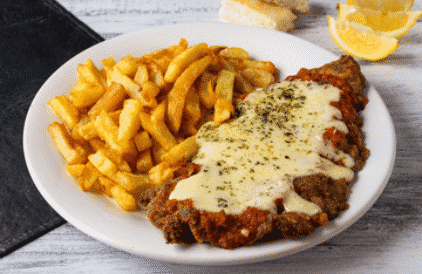

📍!UBICACIONES¡ solo de Buenos Aires
:quality(85)/arc-anglerfish-arc2-prod-infobae.s3.amazonaws.com/public/EWRWZLV7FZEM7C24TIEPFBJCP4.jpg)
Milanesa napolitana con frita
La milanesa a la napolitana es un plato típico de la gastronomía rioplatense propia de Argentina que tiene su origen en la influencia de la inmigración italiana. Consiste en una milanesa, habitualmente de carne vacuna, llevada al horno para ser recubierta como una pizza, con salsa de tomate y queso mozzarella, añadiendo diversos ingredientes (como jamón, rodajas de tomate, o cebolla).1 Habitualmente se sirve con una guarnición de papas fritas.1
Alfajores de maizena
En Hispanoamérica, el alfajor es un postre dulce, que comparte el origen con su homónimo español, una golosina tradicional de la gastronomía del Al-Ándalus, aunque guarde más similitudes con el alajú, en cuanto a su elaboración.12 Fue difundido en América durante el periodo colonial.3 Su nombre proviene del hispanoárabe al-hasú que significa 'el relleno'.4 El característico formato redondo o de oblea proviene de Argentina que es donde nacio este postre.